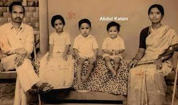
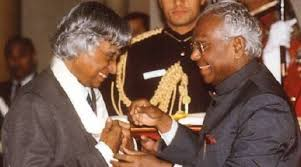
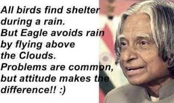
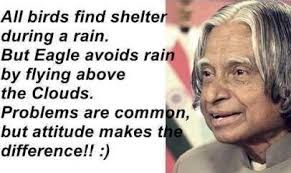
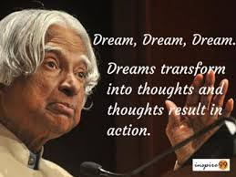
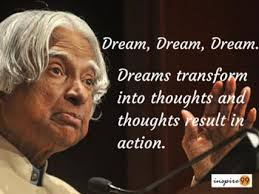

Dr.Avul Pakir Jainulabdeen Abdul Kalam was born on 15th October in Rameswaram,Ramnad district,Madras presidency,British India.
-->His parents were Jainulabdeen,Aishamma and he has 4 brothers and a sister.
-->He studied in St.Joseph's college and Madras Institute of Technology.
-->Dr.A.P.J.Abdul Kalam was a professor,an author and an aerospace scientist.
-->Dr.Kalam became the 11th President of India in July,2002.
-->His term lasted for 5 years,from 25th July 2002 to 25th July 2007.He succeeded K.R.Narayanan and was succeeded by Smt.Prathiba Patil.
-->He was fondly called as People's President.
-->Kalam declined to contest for 2012 presidental poll.
-->Post Presidency Dr.Kalam became a visiting professor in IIMA,IIMS,IIMI and the chancellor of IIST.
-->He joined the Aeronautical Development Establishment of the Defence Research and Development Organisation in 1960 as a scientist.
-->Kalam was transferred to Indian Space Research Organisation in 1969.
-->He was the project director of India's first satellite launch vehicle (SLV-III) which was launched on July 18,1980.
-->Kalam played a major role in developing many missiles like Agni and Prithvi.
-->He recieved 7 honorary doctorates.
-->He was bestowed with Padma Bhushan in 1981 and Padma Vibhushan in 1990 for his work in ISRO and DRDO.
-->In 1997,he was honoured with India's highest civilian award ,the Bharat Ratna,for his contribution to the scientific research and modernisation of defence technology in India.
-->In 2013 he was the recipient of the Von Barun Award from the National Space Society.
*Dr.Kalam wrote 12 books like Wings of fire,2020 A Vision for the New Millenium,Ignited minds,Children ask Kalam etc.He loved children a lot.Kalam had set a target of interacting with 1,00,000 students during the two years after his resignation from the post of scientific adviser in 1999.He said, "I feel comfortable in the company of young people,particularly high school students.Henceforth I intend to share with them experiences,helping them to ignite their imagination and preparing them to work for a developed India for which the road map is already available."
.jpg) 

.jpg) 
